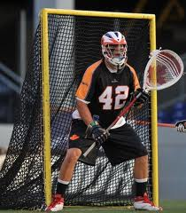

David Earl
Will serve as a team captain during his senior campaign ... an Inside Lacrosse preseason All-American and preseason all-BIG EAST honoree ... picked by the Hamilton Nationals in the third round (13th overall selection) of the 2011 Major League Lacrosse draft ... received All-America and all-BIG EAST honors during his junior season... has played in 48 games during his career ... a three-time monogram recipient ... has notched 48 points on 36 goals and 12 assists ... 127 ground balls ... figures to be a part of a solid first midfield unit ... one of the top ground ball guys on the team
Zach Brennerz
Copped All-America honors as a junior and senior ... also earned first-team all-BIG EAST accolades during his final two campaigns ... played in 62 career games, including 45 starts ... registered 100 points on 72 goals and 28 assists ... picked up 51 ground balls ... became Notre Dame's highest-ever Major League Lacrosse draftee as he was taken fifth overall by the Long Island Lizards during the 2011 draft ... named to the 2010 NCAA Championship All-Tournament Team ... four monograms ... team captain during his senior campaign.
Scott Rodgers
Named the Most Outstanding Player of the 2010 NCAA Championship ... a two-time All-America honoree ... named the 2009 Great Western Lacrosse Player of the Year ... a second-team all-BIG EAST pick in 2010 ... led the nation in goals-against average (6.14) and save percentage (.663) in 2009 ... also led the nation in save percentage (.605) in 2010 in addition to ranking third in goals-against average (7.56) ... played in 38 career games, including 31 starts ... finished his stellar career with a 6.77 goals-against average and a .642 save percentage ... made 371 saves, while allowing 207 goals ... 69 ground balls ... a two-time monogram recipient ... selected by the Toronto Nationals in the second round (seventh overall pick) of the 2010 MLL Draft
Joey Kemp
A three-time All-America honoree ... received first-team All-America honors from the United States Intercollegiate Lacrosse Association (USILA) as a senior ... became just the second student-athlete, and the first goalie, in program history to be a first team All-American ... received the 2008 Kelly Award for Outstanding Goalie in NCAA Division I ... USILA honorable mention All-America selection as a sophomore and junior ... named the 2007 Great Western Lacrosse League (GWLL) player of the year ... a three-time all-GWLL first-team selection ... earned all-conference recognition all four of his seasons in an Irish uniform ... GWLL rookie of the year in 2005 ... two-time team captain and four-time monogram winner ... was selected by the Los Angeles Riptide in the third round with the 29th pick overall during the 2008 Major League Lacrosse Draft.